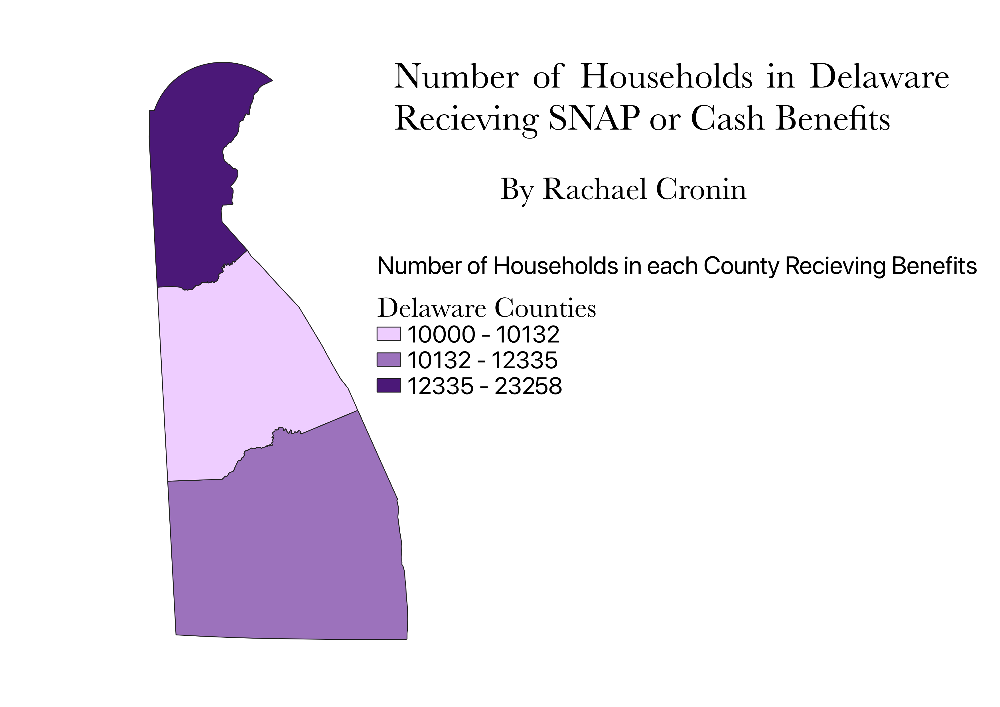

Homework 6: Census data choropleth
Rachael Cronin
My map demonstrates the number of households per county that recieve cash and/or SNAP benefits from the government in Delware. There are only 3 counties in delaware, yet there are some substantial differences in the number of households recieving government benefits between the counties.

Data used for this project
CSV SNAPS dataset
Delaware Counties Shapefile
Delaware Counties geoJSON- Link also included in HW_6_pt1 folder on gitHub